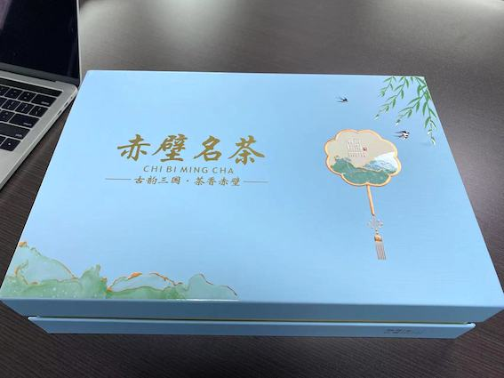
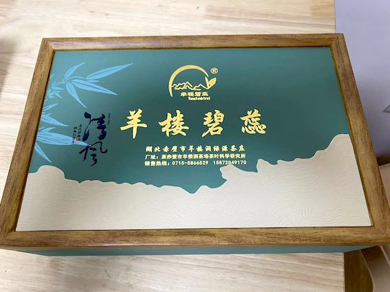
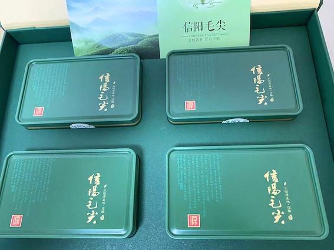
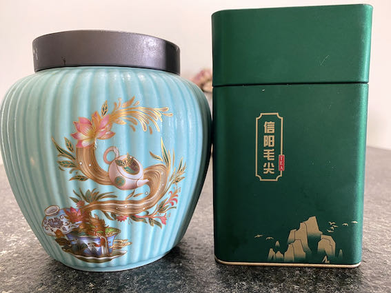

爱茶之人千千万，但我似乎是个有些“偏执”的茶客。我的茶世界，几乎被绿茶占据了大半壁江山。红茶虽好，无论是精工细作的功夫茶，还是香醇浓郁的奶茶，于我而言都只是偶尔的调剂，远不及绿茶来得日日相伴。
绿茶自有其独特的魅力，那份淡淡的清香，轻啜一口，口舌生甘，回味无穷，仿佛能洗去尘世的喧嚣。在众多绿茶中，有三款是我的心头好，它们各有千秋，却都让我爱不释手。
赤壁，这个名字总让我联想到三国古战场，但它同样是知名的产茶区。赤壁的绿茶品质极佳，其中我最爱的莫过于“羊楼碧蕊”和“烟雨江南”。
这里稍微科普一下赤壁绿茶：赤壁产茶历史悠久，自古便是“万里茶道”的重要源头。独特的地理气候条件，赋予了赤壁绿茶得天独厚的品质。它以其茶味浓郁、口感醇厚、回味悠长而闻名。赤壁绿茶的加工工艺相对简单，更多地保留了茶叶最原始的自然风味，所以你喝到的，是真正带着山野芬芳的纯粹茶味。
 赤壁绿茶的醇厚与清香，就像一位不施粉黛的佳人，以最本真的面貌示人，却最能打动人心。
来自湖南湘西的黄金茶，光听名字就带着几分贵气。当地有句俗语，叫“一两黄金一两茶”，足以见得其珍贵。
关于黄金茶：湘西黄金茶之所以得名，不仅因为其珍贵，更因为它冲泡后汤色金黄明亮，芽叶碧绿鲜活，仿佛一杯流动的黄金。它生长在湘西独特的富硒土壤中，含有丰富的微量元素。黄金茶的特点是味道甘甜，入口清新，泡起来满杯碧绿，赏心悦目。喝一口，舌苔立即生甘，那种甜润是其他绿茶少有的。不过，黄金茶不那么耐泡，通常泡上1-2次后，茶味就会逐渐变淡，所以更适合小口品饮，慢慢享受。
黄金茶的美，在于它带来的视觉与味觉的双重享受，是味蕾上的甜蜜暴击。
说到绿茶，怎能不提信阳毛尖？因为家里有朋友在信阳本地，所以每年我都能品尝到最新鲜的信阳毛尖，尤其是清明节前采摘的明前茶，更是家中的常备。
信阳毛尖，是中国十大名茶之一。它产自河南信阳大别山区，以其“细、圆、光、直、多毫”的独特外形和“清、香、甜、活”的品质特征而著称。信阳毛尖的制作工艺十分精细，从采摘到加工，每一步都力求完美，因此它的口感非常细腻。缺点是，相较于赤壁绿茶的浓郁和黄金茶的甘甜，信阳毛尖的香甜度可能略逊一筹，更偏向于清雅。
 信阳毛尖的魅力，在于那份匠心独运的精细，以及它所带来的唇齿间的细腻体验。
这三款绿茶，虽然价格都不算便宜，但在我心中，如果一定要选出一个最爱，那无疑是赤壁绿茶。它那份原生态的自然芬芳，总能让我回味无穷，仿佛置身于山野之间，感受大自然的馈赠。
当然，除了这三款，我也尝试过许多其他著名的绿茶，比如西湖龙井、黄山毛峰等。但或许是口味偏好吧，它们都未能像赤壁绿茶、黄金茶和信阳毛尖那样，深得我心。这也说明，即便同为绿茶，每个人的口味喜好也真是千差万别，茶的魅力也正在于此。